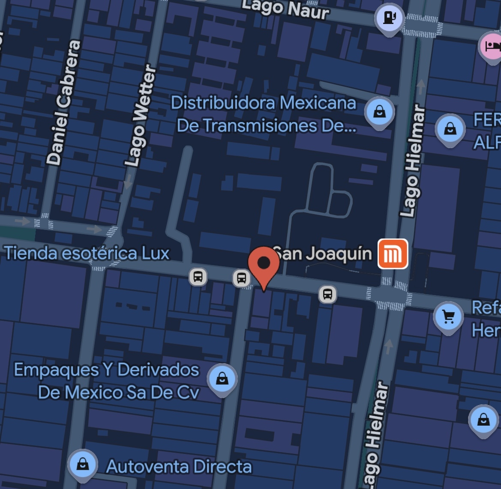

ubicanos en la siguiente direccion, cerca de una tienda de abarrotes, a un lado de la estacion del metro san juaquin de la linea naranja
C. Lago Ginebra 28, Cuauhtémoc Pensil, Miguel Hidalgo, 11490 Ciudad de México, CDMX
edificio color azul
